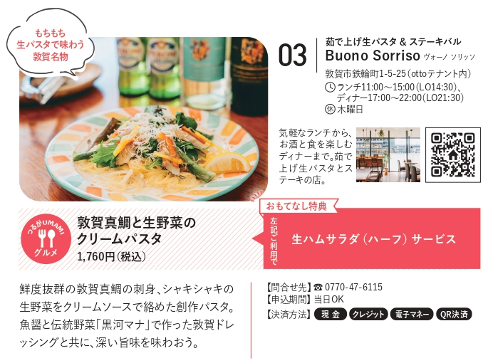
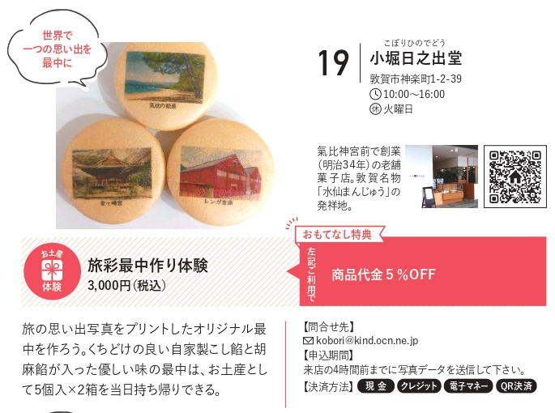
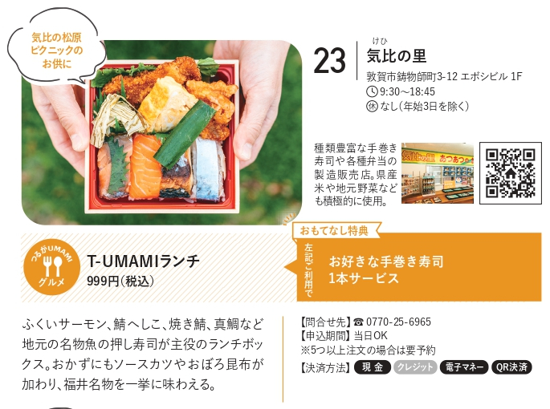
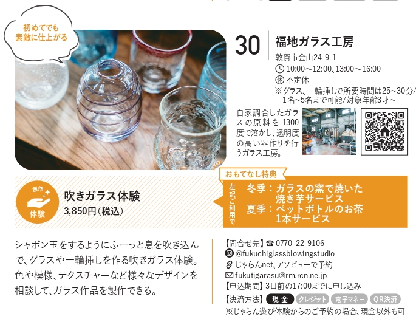
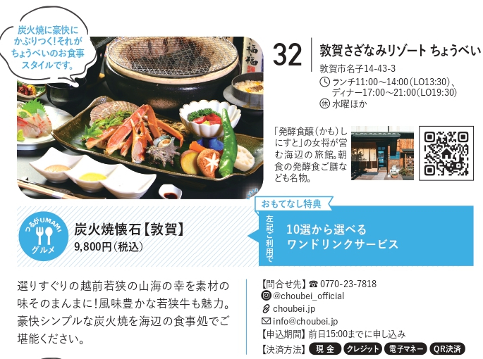
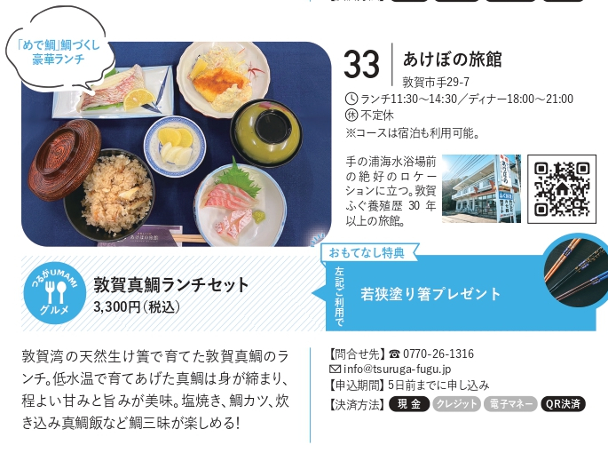

つるがおもてなしパスポートとは？
「つるがおもてなしパスポート」とは、官民連携により令和３年度に開発した「つるがＵＭＡＭＩグルメ（新ご当地グルメ）」や「体験観光コンテンツ」の各情報やお得な割引サービス等を掲載した冊子になります。各店舗で提示することで、特別価格での提供や特典を受けることができます。
パスポートの配布先
(1)観光施設関係
- 敦賀駅観光案内所
- 敦賀赤レンガ倉庫
- 人道の港敦賀ムゼウム
- 敦賀市立博物館
- みなとつるが山車会館
- 新日本海フェリー
- 敦賀国際ゴルフ倶楽部
- 日本海さかな街
- 敦賀きらめき温泉リラ・ポート
(2)宿泊施設関係
- 敦賀マンテンホテル駅前
- ホテルルートイン敦賀駅前
- 東横INN敦賀駅前
- ニューサンピア敦賀
- 北国グランドホテル
- ホテルグランビナリオTSURUGA
(3)その他
- 敦賀商工会議所
- Dr.Driveセルフ サンメイト敦賀店
使い方
step1
気になるお店や施設を探して、「おもてなし」をチェック
北陸新幹線延伸により訪れるであろうたくさんのお客様のために、市内のお店や施設がタッグを組み個性豊かなサービスを企画しました。この冊子限定の「おもてなし」をぜひ体験してみましょう！
step2
「パスポートを見ました！」とまずは現地に連絡しよう
予約は電話、インターネット、SNS などから申し込み下さい。「おもてなし」の提供は当日や前日予約が可能なお店・施設もありますが、事前に現地へ問い合せをしておくとスムーズです。
step3
現地でパスポートを提示して、「おもてなし」を受けよう
店頭・受付などでつるがおもてなしパスポート利用の旨を伝えて、冊子を提示しましょう。冊子利用は基本的に回数や人数には制限なし！お気に入りを見つけて、リピート利用もできます。
※店舗によりおもてなし期間が限定となる場合もあります。
※他のサービスとの併用はお断りする場合もあります。
中心エリア




広域エリア


西浦半島エリア

